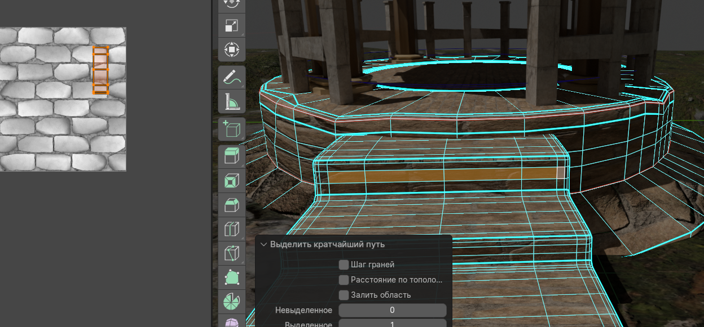
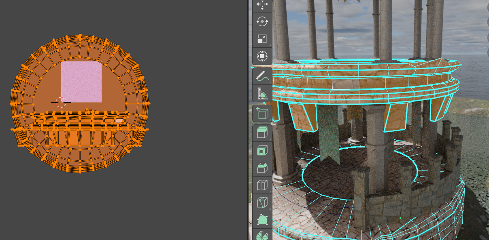

Сцена уже смоделирована. Сегодня делаем вид «как у настоящих камня, земли, дерева» за счёт PBR-текстур — заранее подготовленных карт, которые описывают поверхность физически правдоподобно при любом освещении.
Что такое PBR и какие карты мы используем
PBR (Physically Based Rendering) — подход, при котором материал задаётся свойствами, похожими на реальные: цвет, шероховатость, металличность, нормали крошечных неровностей. В учебных наборах текстур часто лежат файлы с суффиксами:
- Base Color / Albedo / Color — цвет поверхности без нарисованных теней (диффузная «окраска»).
- Roughness (или Glossiness в других пакетах — тогда её инвертируют) — насколько поверхность матовая или зеркальная.
- Normal — «фальшивый» рельеф мелких впадин и выпуклостей без лишней геометрии; в Nodos подключают в
Normal Map→ вход нормалейPrincipled BSDF. - Ambient Occlusion (AO) — затемнение в щелях; часто умножают на базовый цвет или подкручивают в смеси для глубины.
- Metallic — для камня и дерева обычно
0; для голого металла1. Для нашей ротонды почти везде неметалл.
Текстуры можно взять с бесплатных сайтов (Poly Haven, ambientCG и др.) в разрешении 1K–2K; главное — один и тот же «набор» (одна папка на материал), чтобы карты совпадали по масштабу.
Подготовка сетки
- Выделите объект (земля, стена башни, ступени и т.д.). Для каждого крупного элемента удобно сделать свой материал.
- Разверните UV: вкладка UV Editing, в
Edit Modeвыделите нужные грани →U→ Smart UV Project (быстрый вариант для курса) или выровняйте швы аккуратнее, если есть время. - Проверьте масштаб: в UV Editor островки не должны быть нулевого размера; при необходимости UV → Pack Islands.
Быстрые способы без ручной сборки каждого узла
Ниже — два популярных ускорителя; базовая теория PBR всё равно полезна, чтобы потом подкрутить материал.
- Аддон BlenderKit. Установите и включите его в
Edit → Preferences → Add-ons(или через сайт BlenderKit — по инструкции разработчика). В сцене откройте панель BlenderKit, найдите материал (камень, трава, дерево и т.д.) и перетащите его на объект во вьюпорте — готовый шейдер назначится на выделенный меш. Для разных частей ротонды перетащите материалы отдельно на землю, стены, перила. - Аддон Node Wrangler (часто уже в комплекте Blender). Включите:
Edit → Preferences → Add-ons→ найдите Node Wrangler и поставьте галочку. В рабочей области Shading выделите узел Principled BSDF, затем нажмитеCtrl + Shift + T— откроется выбор файлов: укажите папку с вашим PBR-набором (или выделите все карты сразу). Аддон сам создаст узлыImage Textureи подключит их к нужным входамPrincipled BSDFпо именам файлов (*_diff,*_rough,*_norи аналогичные шаблоны). Проверьте после импорта, что у карт шероховатости и нормалей стоит Non-Color.
Подключение PBR вручную (Principled BSDF)
Если не используете BlenderKit или Ctrl + Shift + T у Node Wrangler, можно собрать узлы самим — так лучше понимается схема.
- Перейдите в рабочее пространство Shading. Для объекта создайте материал или откройте существующий.
- Узел Principled BSDF — основа. Подключайте Image Texture узлы к соответствующим входам:
- карта цвета →
Base Color; - карта шероховатости →
Roughness(цветовое пространство узла: Non-Color); - карта нормалей через узел Normal Map →
Normal; - при наличии AO — через MixRGB (умножение) с базовым цветом или лёгкая смесь.
- карта цвета →
- Для всех карт кроме Base Color в узле
Image Textureвыставьте Color Space: Non-Color, иначе шероховатость и нормали исказятся. - Подбор масштаба деталей: узел Mapping + Texture Coordinate (UV) — при необходимости измените
Scale, если кирпич или камень слишком крупные. - Назначьте разные PBR-наборы: тёмный камень башни, земля/трава для ландшафта, при желании дерево для перил — на каждый свой материал и свои UV.
- Во вьюпорте включите Material Preview или Rendered, чтобы увидеть блики и рельеф от нормалей.
- Сохраните файл как
lesson02_pbr_textures.blend.
Как проверять текстуры: Rendered и “видно все ноды”
Когда все PBR-карты подключены в нодах, удобнее всего проверять результат в режиме Rendered во вьюпорте: вы сразу видите, как работают карты (цвет, нормали, шероховатость) при освещении сцены, а не только “на глаз” в Shader Editor.
- Во вьюпорте переключитесь на Rendered (иконка “финального” затенения справа сверху). При необходимости временно отключите лишние оверлеи, чтобы не мешали (например сетку/оси).
- Проверьте Roughness: если всё выглядит “пластиком” или слишком зеркально — подправьте яркость/контраст карты или множитель (в узлах часто это делается через `MixRGB`/`Math` до входа в `Roughness`).
- Проверьте Normal: в узле Normal Map обычно есть параметр Strength. Увеличивайте, если рельеф не читается, и уменьшайте, если нормали “ломают” форму и дают слишком жёсткие края.
- Проверьте AO (если используете): смотрите, чтобы затемнение было только в щелях/углублениях, а не “зачерняло” гладкие части.
- Подготовьте 2–3 ракурса: поверните модель так, чтобы свет подсветил и ровные, и рельефные места. Так проще поймать проблемы до финального рендера.
- После правок снова переключайтесь на Rendered, пока результат не станет “живым” и правдоподобным.
UV: почему текстуры “едут” и как это проверить
PBR-карты читаются через UV-развёртку. Если UV сделаны с ошибками, то любая карта (цвет/нормали/roughness) будет выглядеть смазанно, вытянуто или с разрывами. Ниже — как удобно проверять UV прямо по текстуре.
- Откройте UV Editing и выберите объект/меш.
- В UV Editor отображайте вашу текстуру (включите Image в фоне/выберите Image Texture) — так вы увидите растяжения прямо на UV островах.
- Слева/в UV островах смотрите на “вытянутые” места: если кирпич слишком большой/маленький или нормали выглядят “рвано”, чаще всего виноват UV (или масштаб в нодах).
- На модели в 3D при выделении UV острова проверяйте, как именно ложится карта: это быстро показывает проблемы со швами и сильным stretch.
- Если текстура выглядит “криво”, можно:
- в UV Editor подправить остров (масштаб/поворот),
- пересделать развертку (Smart UV Project или ручные швы),
- или скорректировать масштаб в Shader через узел Mapping.
- После правок снова проверьте в Rendered, чтобы убедиться, что исправления не сломали roughness/normal.


Шейдинг: ноды PBR и материал воды
Обычно “вода” в Blender (в том числе из BlenderKit) — это не просто один Principled BSDF, а смесь отражений, прозрачности и объёма (чтобы вода выглядела глубже), плюс волны через нормали/бамп.
- Отражения (Fresnel). Под острым углом вода отражает сильнее, сверху — слабее. Это часто делается через Fresnel или Layer Weight и управляет “Reflection Factor”.
- Преломление (IOR). Для воды обычно около 1.333. Если IOR выше/ниже, вода выглядит “не как вода”.
- Шероховатость. Почти всегда маленькая (0–0.05): чем больше, тем более мутные и размытые отражения.
- Объём/поглощение (Volume / Absorption). Даёт ощущение глубины и цвета воды: у берега светлее, в глубине — темнее. В материалах это может называться “Water Density”, “Absorption”, “Depth”.
- Волны и рябь. Обычно Noise/Musgrave/Wave Texture → Bump или Normal и отдельный масштаб (Global Scale) + сила (Strength).
Если вода из BlenderKit выглядит “пластиковой” или “как стекло”, чаще всего нужно подкрутить: Roughness (чуть выше), Reflection Factor (ниже), Water Density/Absorption (больше), и масштаб волн (Global Scale).


Короткая памятка
- PBR даёт предсказуемый вид при смене света — это то, что используют в играх и визуализации.
- Для скорости: BlenderKit — перетаскивание материала на модель; свои папки с картами — Node Wrangler,
Ctrl + Shift + TнаPrincipled BSDF. - Без нормал-карты камень часто выглядит «пластиком» — по возможности не пропускайте её.
- Воду как PBR-«камень» не делают; плоскость воды настроим отдельно в дне 3 и дне 4.